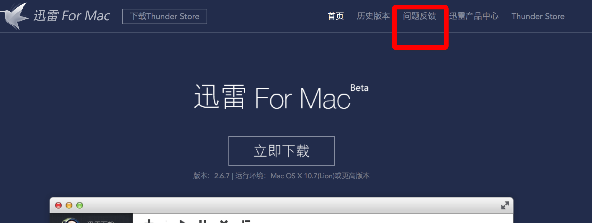
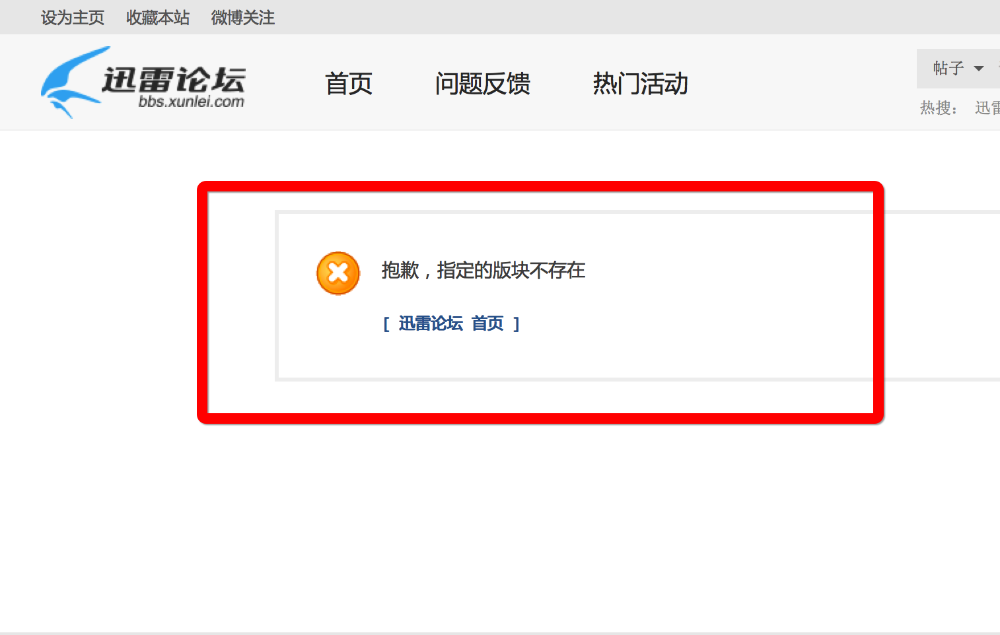

找到如下的文件夹:/Users/$(Your Name)/Library/Application Support/Thunder,然后删除它。再次重新启动迅雷即可。
如果你在网上搜索到如下的几个问题：
就可以按照如上的方法进行解决。
同时，吐槽下 Mac 迅雷的官网。我们可以看到 Mac 迅雷的官网如下：

然后我们点击红框中的问题反馈，然后就看到这么个界面:

真是个悲伤的故事。
一开始遇到的时候，也是以为是程序的问题，于是乎重装了。而且试了历史版本的重装。发现依旧是没有任何乱用。于是就想是否是配置文件的问题，因为发现不管如何重装，我的账号依旧是登陆状态，所以推断是配置文件的问题。于是开始找 osx 上的应用程序一般会在什么位置存放自己的配置文件。
在这篇文章的帮助之下,基本上锁定了以下的几个文件夹：
然后就是苦逼的控制变量法，其中不停的备份，不停的删除，最终确定了目标就是 Application Support，然后大手一挥，rm Thunder，一切终归平静。
这个还真的不是很清楚。感觉像是文件的权限不够或者是文件损坏。
当时还是太过激动，当发现了问题之后，第一时间用Alfred清空了回收站。其实应该将正确的文件夹和错误的文件夹做一个比较。然后确定 bug 的根源，也算是吃一堑长一智。以后注意。